← All workProject 8 of 10
Project 08Designed and calculated, not built
Tendon-Driven Prosthetic Hand
A 3D-printable five-finger hand with underactuated tendon fingers, four linear actuators in the palm and a two-servo thumb. Designed in Inventor as one assembly driven by three grip parameters, with grasp statics, pinch, actuator, joint and print calculations.
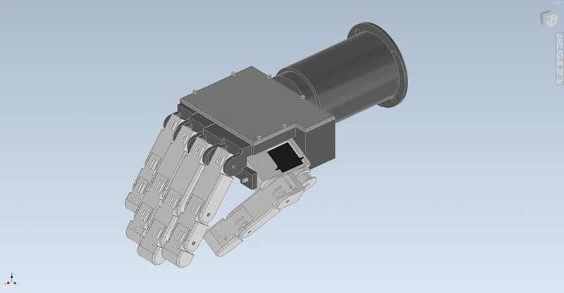
- Hand length (50th pct. adult male)
- 190mm
- Actuators (4 linear + 2 servos)
- 6
- Hand mass, Inventor
- 345g
- Parts in assembly
- 92
01Overview
A right hand sized to a 50th-percentile adult male: 190 mm from wrist to middle fingertip, about 86 mm across the knuckles. Each finger has three printed PETG phalanges on 3 mm steel pins running in igus plastic bushings. One Spectra tendon closes the finger and one latex cord on the back opens it, so a single actuator drives three joints. The four finger actuators are Actuonix PQ12-P linear actuators (40 N, 20 mm stroke) packed into the palm. The thumb rotates on its own axis on a Hitec HS-82MG servo, and a second HS-82MG inside the thumb base winds the thumb tendon on a spool. A 1/2-20 bolt, the standard prosthetic wrist thread, joins the hand to a printed forearm bay that holds the battery, an Arduino Nano Every, motor drivers and a 6 V regulator.
Three Inventor parameters (Grip, ThumbRot, ThumbGrip) move the whole hand. Each joint angle is an Inventor expression of the tendon pulled in, so the fingers close the way the underactuated mechanism does: knuckle first, then the middle joint, then the tip. Designed and calculated only; nothing has been built.
Tools Autodesk Inventor 2027 / Python / NumPy / SciPy / Matplotlib / Bambu Studio
What I did
- Wrote the underactuated closing rule into Inventor itself. Each joint angle is a min/max expression of the tendon pulled in, so one Grip parameter closes all three joints of a finger in the right order and moves the actuator rod to match.
- Solved the grasp as a real equilibrium instead of assuming a pose. Each finger closes until it touches the object without passing through, then settles to minimum energy, and the contact forces come from a non-negative least-squares joint balance. That is how I caught the first moment arms curling the finger off the object.
- Modelled the pinch with pad friction as a linear program, which gave the guaranteed force rather than a best case. It showed that the thumb rotation servo, not the finger, sets the pinch, and that a 2:1 gear stage would roughly double it.
- Wrote a buildability check with real part numbers. $384 of the $624 parts cost comes from prices I confirmed on vendor listings (actuators, servos, bushings). It lists six open items, including the missed 40 N grip target and the servo data Hitec doesn't publish.
Specification
- Size
- Right hand, 50th-percentile adult male: 190 mm long, 86 mm knuckles; phalanges 42/25/22 (index), 45/27/23 (middle), 42/26/22 (ring), 34/21/20 (little) mm
- Fingers
- 3 PETG phalanges each on 3 mm stainless dowels in igus GSM-0304-03 bushings; extension stops on the joint tongues
- Transmission
- PowerPro 80 lb Spectra tendon on wrap grooves (6.5 / 4.4 / 3.2 mm moment arms), 2 mm latex return cord, closes knuckle first, then middle joint, then tip
- Actuators
- 4 x Actuonix PQ12-100-6-P (40 N at 6 mm/s, 20 mm stroke, holds 35 N unpowered); 2 x Hitec HS-82MG for thumb rotation and flexion (7.5 mm spool)
- Wrist and bay
- 1/2-20 UNF bolt into a jam nut in a printed PLA forearm bay; 2S 800 mAh LiPo, Arduino Nano Every, 2 x Pololu DRV8833, Pololu 6 V 5 A regulator; 4 x M4 socket flange
- Mass (Inventor)
- 345 g hand, 460 g with the forearm bay and battery (printed parts at effective infill density)
- Printing
- Two Bambu plates: 18 PETG parts on 230 x 213 mm, 2 PLA parts; orientation and overhang checked per part
- Assembly
- 92 occurrences, 34 unique files, 273 constraints, 0 DOF; driven by Grip, ThumbRot and ThumbGrip
02Design decisions4 changes
- 01
Wrap grooves instead of straight channels
- Finding
- Straight tendon channels through the joint tongues give a moment arm that shrinks as the joint bends and reverses past about 60 deg, so the tendon would start opening the joint it should close.
- Action
- Cut a groove around every joint pin (a virtual pulley) so the tendon wraps at a fixed radius.
- Outcome
- Constant moment arms. Tendon travel is exactly radius x angle, the same formula the Inventor joint expressions use.
- 02
Re-picked the moment arms with an equilibrium solver
- Finding
- My first arms (5.4 / 4.8 / 4.0 mm) looked fine in the closing sequence. A constrained-equilibrium solve showed the fingertip joint had so much torque that the finger curled around a 50 mm cylinder touching only with the tip, pressing about 0 N toward the palm.
- Action
- Changed to 6.5 / 4.4 / 3.2 mm and cut the fingertip range to 50 deg to stay inside the 20 mm actuator stroke.
- Outcome
- Every finger now holds the object with its first and last phalanx. That gives 11.8 N toward the palm on a 50 mm cylinder and 25.7 N on 30 mm, still short of my 40 N target.
- 03
Moved the thumb's flexion motor into the thumb
- Finding
- A fifth PQ12 for the thumb needs 65 mm of length when extended, which ran into the rotating thumb base. With the motor in the palm, rotating the thumb would also have changed its tendon length.
- Action
- Put a Hitec HS-82MG with a 7.5 mm spool inside the rotating yoke, and a second HS-82MG on the rotation axis.
- Outcome
- Rotating the thumb never pulls its tendon. The full closing travel is 155 deg of the servo's roughly 160 deg.
- 04
Swept 108 poses for clashes
- Finding
- The first check found 10 static clashing pairs (192 mm3): screws modelled at their pilot size, a cover screw landing on a servo tab, and the little finger's actuator lug inside the palm wall.
- Action
- Fixed all of them, then checked every combination of finger grip, thumb rotation and thumb grip, separating real clashes from fingers simply touching the thumb.
- Outcome
- 0 structural clashes and 0 DOF. The poses where fingers meet the opposed thumb became a grip envelope for the firmware.
03Views12 renders


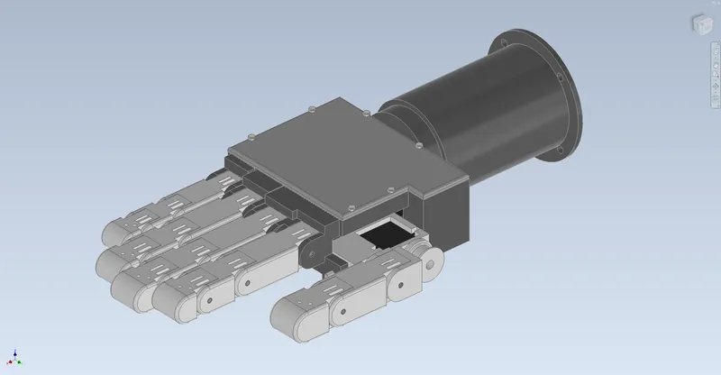

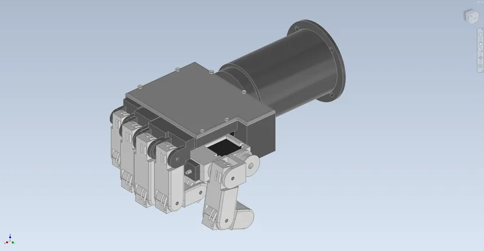

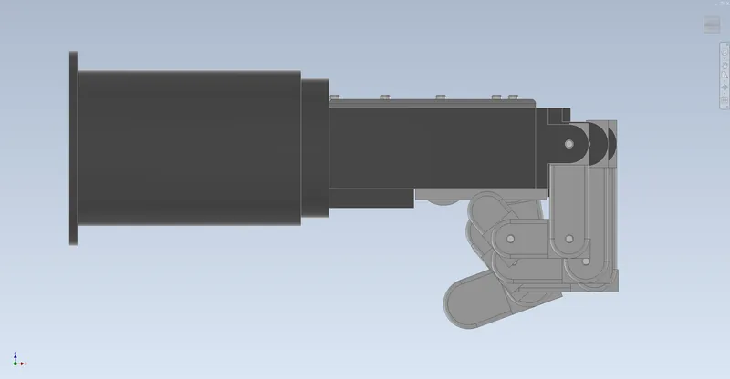

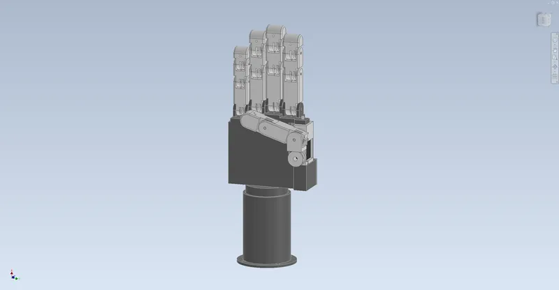

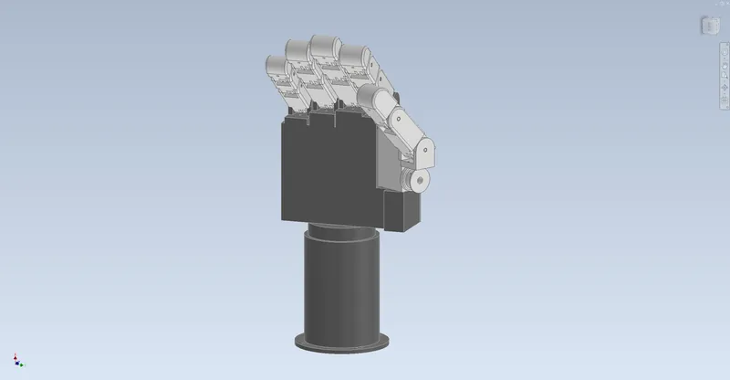

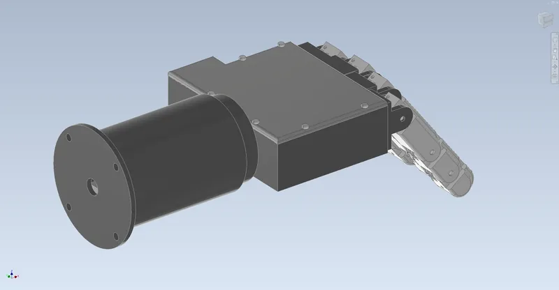

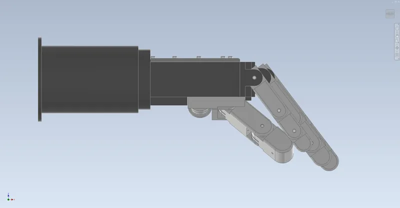

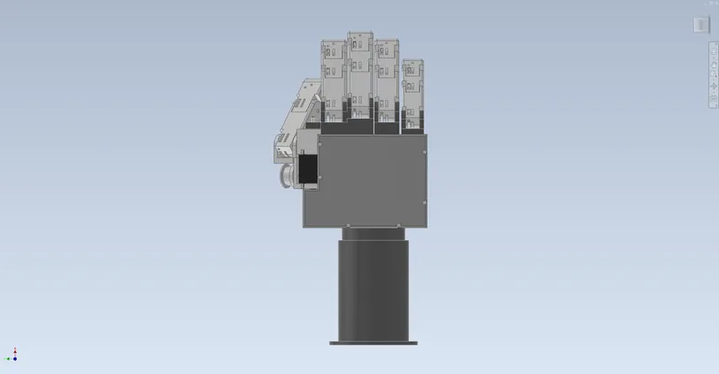

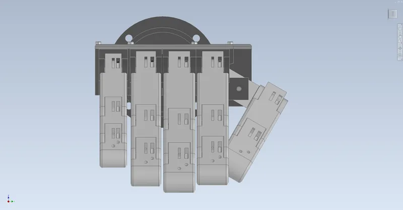

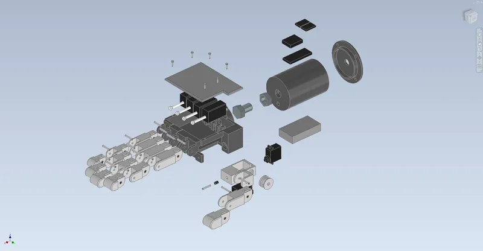

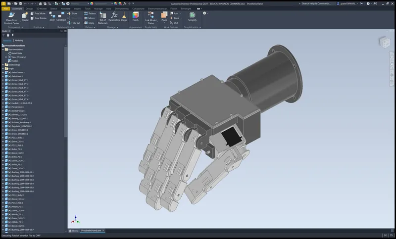
04Drawings5 sheets

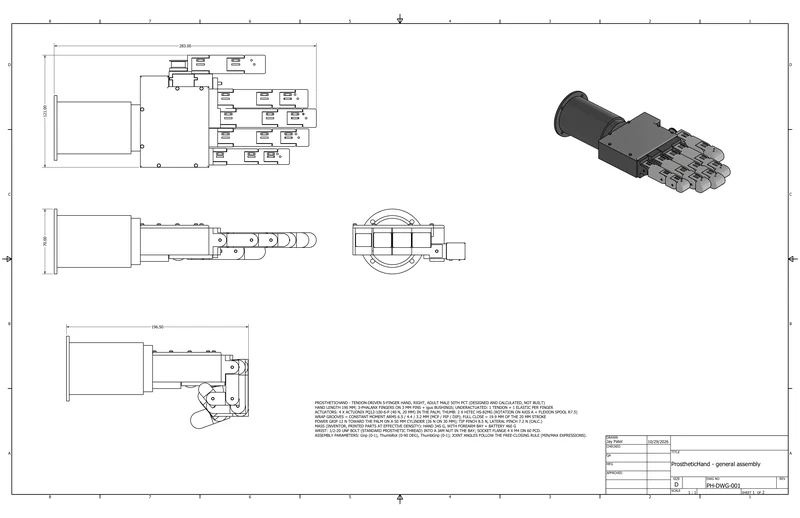

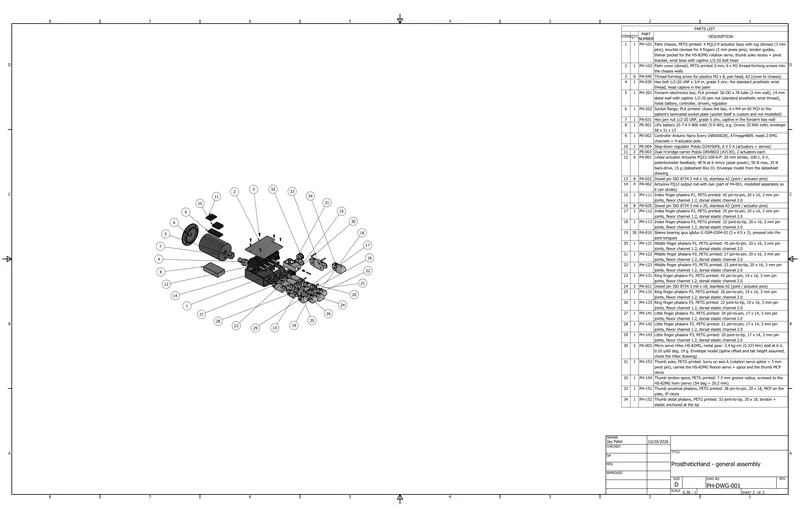

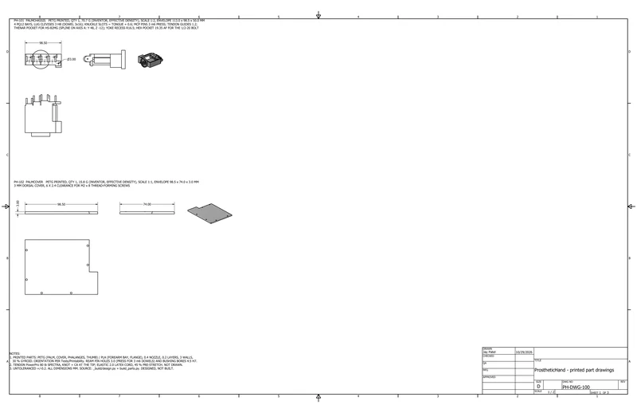

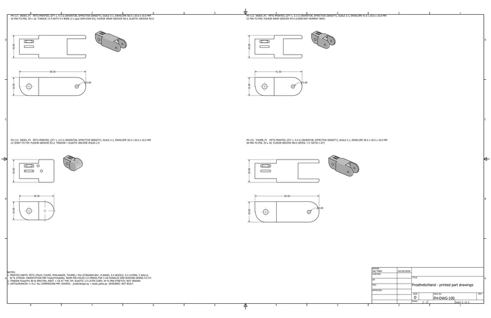

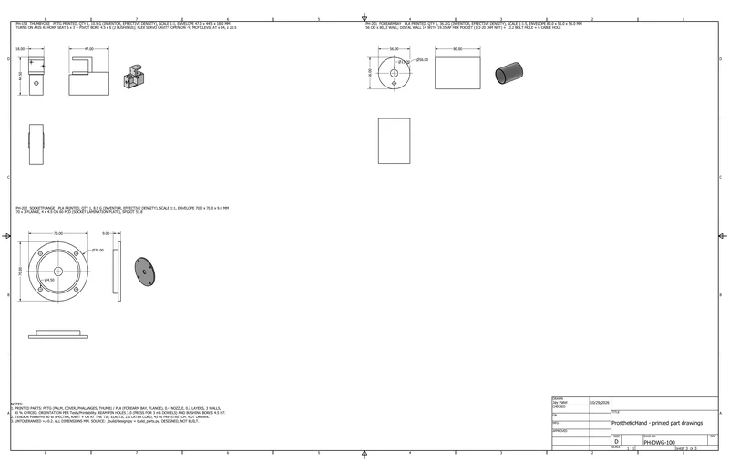
05Analysissimulated unless stated
A1 Fingers

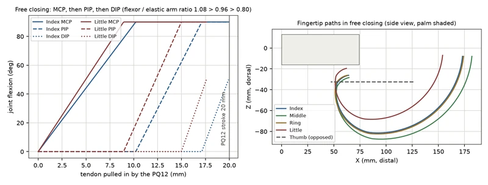

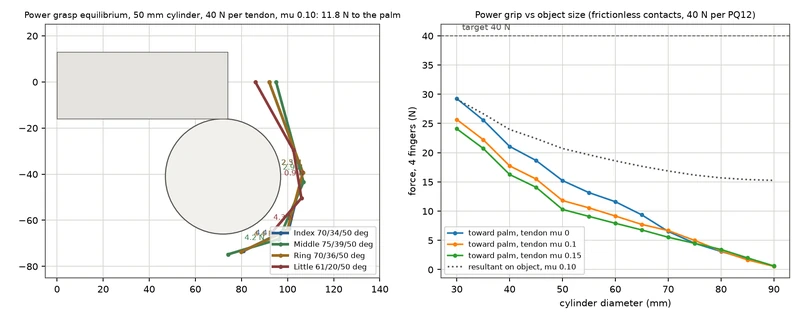
A2 Actuators and structure

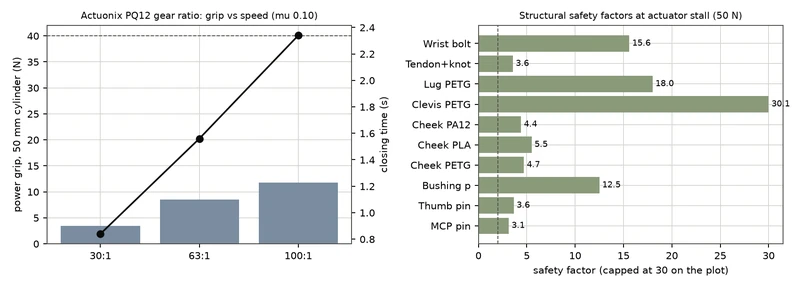
06Results8 checks
| Check | Result | Margin / status |
|---|---|---|
| Power grip | 11.8 N toward the palm on a 50 mm cylinder, 25.7 N on 30 mm, with frictionless contacts and 40 N per tendon. My 40 N target is not met | Calculated |
| Pinch | Tip pinch 8.5 N, lateral pinch 7.3 N. Both are limited by the thumb rotation servo; the index alone can push 17-19 N | Calculated |
| Speed | 2.3 s for a full finger close (PQ12 100:1); 0.4 s for the thumb | Calculated |
| Joints | MCP pin SF 3.1 at actuator stall (115 N on a 3 mm pin); bushings at 6.4 of 80 MPa; printed cheek bearing SF 4.7 in PETG, 5.5 PLA, 4.4 PA12 | Calculated |
| Tendon and wrist | Tendon SF 3.6 including a 50 % knot loss; 1/2-20 wrist bolt SF 15.6 under a 50 N side load | Calculated |
| Battery | About 127 grasps in a 16 h day on 2S 800 mAh; 5.8 A worst-case stall vs a 5 A regulator, so the firmware staggers starts | Calculated |
| Interference | 0 structural clashes in 108 poses; fingers that meet the opposed thumb are counted as contact and mapped as a grip envelope | Checked in Inventor |
| Kinematics | Every phalanx, actuator rod and thumb pose matches the design equations to 0.0003 mm | Measured in Inventor |
07Parts list41 lines, $624.19
From the project's bill of materials (ProstheticHand_BOM.csv), grouped by how you get each part. Quantities are from the CAD assembly. Prices marked Confirmed were checked against a vendor listing; Est. prices are estimates. Designed and calculated, not built.
- Buy · 53 pcs
- 15lines
- Print · 20 pcs
- 20lines
- Fabricate · 0 pcs
- 0lines
- Hardware · 27 pcs
- 6lines
- Confirmed
- $383.58 61.5%
- Est.
- $240.61 38.5%
- Not priced
- 1 line PN-006 Socket
Complete per the buildability check: every part it lists for a working build is in this BOM. Open items are below.
P1 Buy purchased and vendor parts · 15 lines, 53 pcs
| Qty | Part no. | Description | Unit | Line |
|---|---|---|---|---|
| 4 off | PA-001 | Linear actuator Actuonix PQ12-100-6-P: 20 mm stroke, 100:1, 6 V, potentiometer feedback; 40 N at 6 mm/s (peak power), 50 N max, 35 N back-drive, 15 g (datasheet Rev D). Envelope model from the datasheet drawingSource: Actuonix PQ12-100-6-P (RobotShop $78.65) · Material: Purchased assembly (plastic / metal)Price: RobotShop US listing, PQ12-P 100:1 6 V ($78.65, incl. tariff) | $78.65 | $314.60Confirmed4 × $78.65 |
| 4 off | PA-002 | Actuonix PQ12 output rod with eye (part of PA-001, modelled separately so it can stroke)Source: part of PA-001 · Material: Purchased assembly (plastic / metal) | Incl. | |
| 2 off | PA-003 | Micro servo Hitec HS-82MG, metal gear: 3.4 kg-cm (0.333 Nm) stall at 6 V, 0.10 s/60 deg, 19 g. Envelope model (spline offset and tab height assumed, check the Hitec drawing)Source: Hitec HS-82MG (BuddyRC $23.99) · Material: Purchased assembly (plastic / metal)Price: BuddyRC listing, HS-82MG ($23.99 sale; other listings $23-37) | $23.99 | $47.98Confirmed2 × $23.99 |
| 1 off | PE-001 | LiPo battery 2S 7.4 V 800 mAh (5.9 Wh), e.g. Ovonic 2S 800 mAh; envelope 58 x 31 x 13Source: 2S 800 mAh LiPo (Ovonic class) · Material: Purchased assembly (plastic / metal)Price: (2S 800 mAh LiPo class, price not confirmed) | $12.00 | $12.00Est.1 × $12.00 |
| 1 off | PE-002 | Controller Arduino Nano Every (ABX00028), ATmega4809, reads 2 EMG channels + 4 actuator potsSource: Arduino ABX00028 · Material: Purchased assembly (plastic / metal)Price: (Arduino ABX00028 list price class) | $14.50 | $14.50Est.1 × $14.50 |
| 2 off | PE-003 | Dual H-bridge carrier Pololu DRV8833 (#2130), 2 actuators eachSource: Pololu 2130 · Material: Purchased assembly (plastic / metal)Price: (Pololu #2130 list price class) | $5.95 | $11.90Est.2 × $5.95 |
| 1 off | PE-004 | Step-down regulator Pololu D24V50F6, 6 V 5 A (actuators + servos)Source: Pololu 2851 · Material: Purchased assembly (plastic / metal)Price: (Pololu D24V50F6 class) | $25.00 | $25.00Est.1 × $25.00 |
| 30 off | PA-010 | Sleeve bearing igus iglidur G GSM-0304-03 (3 x 4.5 x 3), pressed into the joint tonguesSource: igus GSM-0304-03 (RS 667-1419, EUR 19.48 / 30) · Material: iglidur G (igus)Price: RS Benelux EUR 19.48 / bag of 30 excl. VAT (~$0.70 each) | $0.70 | $21.00Confirmed30 × $0.70 |
| 1 off | PN-001 | Tendon: PowerPro Spectra braid 80 lb (0.43 mm, 356 N), 4 m used; Bass Pro lists 80 lb x 500 yd at $69.99 (confirmed), 150 yd spool est.Not in CADPrice: (500 yd price confirmed) | $25.00 | $25.00Est.1 × $25.00 |
| 1 off | PN-002 | Return elastic: 2.0 mm natural-latex round cord, 1 mNot in CAD | $8.00 | $8.00Est.1 × $8.00 |
| 2 off | PN-003 | EMG sensors SparkFun MyoWare 2.0 Muscle Sensor (in the socket, 2 channels)Not in CAD | $40.00 | $80.00Est.2 × $40.00 |
| 1 off | PN-004 | Silicone fingertip covers (5), cast or bought (pad friction mu ~0.5 assumed in the pinch calc)Not in CAD | $10.00 | $10.00Est.1 × $10.00 |
| 1 off | PN-005 | Wiring: 5-pin 1 mm FPC breakouts for the PQ12s, servo leads, JST connectors, 2S charger leadNot in CAD | $15.00 | $15.00Est.1 × $15.00 |
| 1 off | PN-006 | Socket: custom laminated socket with a 4 x M4 lamination plate (made by a prosthetist, not designed here)Not in CAD | $0.00 | Not priced |
| 1 off | PN-007 | 2S LiPo balance chargerNot in CAD | $20.00 | $20.00Est.1 × $20.00 |
| Buy subtotal | $604.98 | |||
P2 Print 3D-printed parts · 20 lines, 20 pcs
| Qty | Part no. | Description | Unit | Line |
|---|---|---|---|---|
| 1 off | PH-101 | Palm chassis, PETG printed: 4 PQ12-P actuator bays with lug clevises (3 mm pins), knuckle clevises for 4 fingers (3 mm press pins), tendon guides, thenar pocket for the HS-82MG rotation servo, thumb yoke recess + pivot bracket, wrist boss with captive 1/2-20 bolt headSource: Printed in-house (Bambu Lab, 0.4 nozzle) · Material: PETG, FDM printed (3 walls, 30 % gyroid; effective density)Price: filament est. ($20/kg PETG, $18/kg PLA) incl. 15 % waste | $1.63 | $1.63Est.1 × $1.63 |
| 1 off | PH-102 | Palm cover (dorsal), PETG printed 3 mm, 6 x M2 thread-forming screws into the chassis wallsSource: Printed in-house (Bambu Lab, 0.4 nozzle) · Material: PETG, FDM printed (3 walls, 30 % gyroid; effective density)Price: filament est. ($20/kg PETG, $18/kg PLA) incl. 15 % waste | $0.36 | $0.36Est.1 × $0.36 |
| 1 off | PH-111 | Index finger phalanx P1, PETG printed: 42 pin-to-pin, 20 x 16, 3 mm pin joints, flexor channel 1.2, dorsal elastic channel 2.0Source: Printed in-house (Bambu Lab, 0.4 nozzle) · Material: PETG, FDM printed (3 walls, 30 % gyroid; effective density)Price: filament est. ($20/kg PETG, $18/kg PLA) incl. 15 % waste | $0.21 | $0.21Est.1 × $0.21 |
| 1 off | PH-112 | Index finger phalanx P2, PETG printed: 25 pin-to-pin, 20 x 16, 3 mm pin joints, flexor channel 1.2, dorsal elastic channel 2.0Source: Printed in-house (Bambu Lab, 0.4 nozzle) · Material: PETG, FDM printed (3 walls, 30 % gyroid; effective density)Price: filament est. ($20/kg PETG, $18/kg PLA) incl. 15 % waste | $0.12 | $0.12Est.1 × $0.12 |
| 1 off | PH-113 | Index finger phalanx P3, PETG printed: 22 joint-to-tip, 20 x 16, 3 mm pin joints, flexor channel 1.2, dorsal elastic channel 2.0Source: Printed in-house (Bambu Lab, 0.4 nozzle) · Material: PETG, FDM printed (3 walls, 30 % gyroid; effective density)Price: filament est. ($20/kg PETG, $18/kg PLA) incl. 15 % waste | $0.11 | $0.11Est.1 × $0.11 |
| 1 off | PH-121 | Middle finger phalanx P1, PETG printed: 45 pin-to-pin, 20 x 16, 3 mm pin joints, flexor channel 1.2, dorsal elastic channel 2.0Source: Printed in-house (Bambu Lab, 0.4 nozzle) · Material: PETG, FDM printed (3 walls, 30 % gyroid; effective density)Price: filament est. ($20/kg PETG, $18/kg PLA) incl. 15 % waste | $0.23 | $0.23Est.1 × $0.23 |
| 1 off | PH-122 | Middle finger phalanx P2, PETG printed: 27 pin-to-pin, 20 x 16, 3 mm pin joints, flexor channel 1.2, dorsal elastic channel 2.0Source: Printed in-house (Bambu Lab, 0.4 nozzle) · Material: PETG, FDM printed (3 walls, 30 % gyroid; effective density)Price: filament est. ($20/kg PETG, $18/kg PLA) incl. 15 % waste | $0.13 | $0.13Est.1 × $0.13 |
| 1 off | PH-123 | Middle finger phalanx P3, PETG printed: 23 joint-to-tip, 20 x 16, 3 mm pin joints, flexor channel 1.2, dorsal elastic channel 2.0Source: Printed in-house (Bambu Lab, 0.4 nozzle) · Material: PETG, FDM printed (3 walls, 30 % gyroid; effective density)Price: filament est. ($20/kg PETG, $18/kg PLA) incl. 15 % waste | $0.12 | $0.12Est.1 × $0.12 |
| 1 off | PH-131 | Ring finger phalanx P1, PETG printed: 42 pin-to-pin, 19 x 16, 3 mm pin joints, flexor channel 1.2, dorsal elastic channel 2.0Source: Printed in-house (Bambu Lab, 0.4 nozzle) · Material: PETG, FDM printed (3 walls, 30 % gyroid; effective density)Price: filament est. ($20/kg PETG, $18/kg PLA) incl. 15 % waste | $0.20 | $0.20Est.1 × $0.20 |
| 1 off | PH-132 | Ring finger phalanx P2, PETG printed: 26 pin-to-pin, 19 x 16, 3 mm pin joints, flexor channel 1.2, dorsal elastic channel 2.0Source: Printed in-house (Bambu Lab, 0.4 nozzle) · Material: PETG, FDM printed (3 walls, 30 % gyroid; effective density)Price: filament est. ($20/kg PETG, $18/kg PLA) incl. 15 % waste | $0.11 | $0.11Est.1 × $0.11 |
| 1 off | PH-133 | Ring finger phalanx P3, PETG printed: 22 joint-to-tip, 19 x 16, 3 mm pin joints, flexor channel 1.2, dorsal elastic channel 2.0Source: Printed in-house (Bambu Lab, 0.4 nozzle) · Material: PETG, FDM printed (3 walls, 30 % gyroid; effective density)Price: filament est. ($20/kg PETG, $18/kg PLA) incl. 15 % waste | $0.10 | $0.10Est.1 × $0.10 |
| 1 off | PH-141 | Little finger phalanx P1, PETG printed: 34 pin-to-pin, 17 x 14, 3 mm pin joints, flexor channel 1.2, dorsal elastic channel 2.0Source: Printed in-house (Bambu Lab, 0.4 nozzle) · Material: PETG, FDM printed (3 walls, 30 % gyroid; effective density)Price: filament est. ($20/kg PETG, $18/kg PLA) incl. 15 % waste | $0.12 | $0.12Est.1 × $0.12 |
| 1 off | PH-142 | Little finger phalanx P2, PETG printed: 21 pin-to-pin, 17 x 14, 3 mm pin joints, flexor channel 1.2, dorsal elastic channel 2.0Source: Printed in-house (Bambu Lab, 0.4 nozzle) · Material: PETG, FDM printed (3 walls, 30 % gyroid; effective density)Price: filament est. ($20/kg PETG, $18/kg PLA) incl. 15 % waste | $0.07 | $0.07Est.1 × $0.07 |
| 1 off | PH-143 | Little finger phalanx P3, PETG printed: 20 joint-to-tip, 17 x 14, 3 mm pin joints, flexor channel 1.2, dorsal elastic channel 2.0Source: Printed in-house (Bambu Lab, 0.4 nozzle) · Material: PETG, FDM printed (3 walls, 30 % gyroid; effective density)Price: filament est. ($20/kg PETG, $18/kg PLA) incl. 15 % waste | $0.07 | $0.07Est.1 × $0.07 |
| 1 off | PH-151 | Thumb proximal phalanx, PETG printed: 38 pin-to-pin, 20 x 18, MCP on the yoke, IP clevisSource: Printed in-house (Bambu Lab, 0.4 nozzle) · Material: PETG, FDM printed (3 walls, 30 % gyroid; effective density)Price: filament est. ($20/kg PETG, $18/kg PLA) incl. 15 % waste | $0.22 | $0.22Est.1 × $0.22 |
| 1 off | PH-152 | Thumb distal phalanx, PETG printed: 32 joint-to-tip, 20 x 18, tendon + elastic anchored at the tipSource: Printed in-house (Bambu Lab, 0.4 nozzle) · Material: PETG, FDM printed (3 walls, 30 % gyroid; effective density)Price: filament est. ($20/kg PETG, $18/kg PLA) incl. 15 % waste | $0.19 | $0.19Est.1 × $0.19 |
| 1 off | PH-153 | Thumb yoke, PETG printed: turns on axis A (rotation servo spline + 3 mm pivot pin), carries the HS-82MG flexion servo + spool and the thumb MCP clevisSource: Printed in-house (Bambu Lab, 0.4 nozzle) · Material: PETG, FDM printed (3 walls, 30 % gyroid; effective density)Price: filament est. ($20/kg PETG, $18/kg PLA) incl. 15 % waste | $0.25 | $0.25Est.1 × $0.25 |
| 1 off | PH-154 | Thumb tendon spool, PETG printed: 7.5 mm groove radius, screwed to the HS-82MG horn (servo 154 deg = 20.2 mm)Source: Printed in-house (Bambu Lab, 0.4 nozzle) · Material: PETG, FDM printed (3 walls, 30 % gyroid; effective density)Price: filament est. ($20/kg PETG, $18/kg PLA) incl. 15 % waste | $0.04 | $0.04Est.1 × $0.04 |
| 1 off | PH-201 | Forearm electronics bay, PLA printed: 56 OD x 78 tube (2 mm wall), 14 mm distal wall with captive 1/2-20 jam nut (standard prosthetic wrist thread), holds battery, controller, drivers, regulatorSource: Printed in-house (Bambu Lab, 0.4 nozzle) · Material: PLA, FDM printed (3 walls, 30 % gyroid; effective density)Price: filament est. ($20/kg PETG, $18/kg PLA) incl. 15 % waste | $0.75 | $0.75Est.1 × $0.75 |
| 1 off | PH-202 | Socket flange, PLA printed: closes the bay, 4 x M4 on 60 PCD to the patient's laminated socket plate (socket itself is custom and not modelled)Source: Printed in-house (Bambu Lab, 0.4 nozzle) · Material: PLA, FDM printed (3 walls, 30 % gyroid; effective density)Price: filament est. ($20/kg PETG, $18/kg PLA) incl. 15 % waste | $0.18 | $0.18Est.1 × $0.18 |
| Print subtotal | $5.21 | |||
P3 Hardware fasteners, pins, keys, rings · 6 lines, 27 pcs
| Qty | Part no. | Description | Unit | Line |
|---|---|---|---|---|
| 8 off | PA-020 | Dowel pin ISO 8734 3 m6 x 20, stainless A2 (joint / actuator pins)Source: ISO 8734 3 m6 stainless (McMaster 90145A class) · Material: Stainless steel 1.4305 / A2Price: (ISO 8734 3 x 20 stainless, packs of 10-25) | $0.60 | $4.80Est.8 × $0.60 |
| 3 off | PA-021 | Dowel pin ISO 8734 3 m6 x 18, stainless A2 (joint / actuator pins)Source: ISO 8734 3 m6 stainless (McMaster 90145A class) · Material: Stainless steel 1.4305 / A2 | $0.60 | $1.80Est.3 × $0.60 |
| 8 off | PA-022 | Dowel pin ISO 8734 3 m6 x 16, stainless A2 (joint / actuator pins)Source: ISO 8734 3 m6 stainless (McMaster 90145A class) · Material: Stainless steel 1.4305 / A2 | $0.55 | $4.40Est.8 × $0.55 |
| 1 off | PA-030 | Hex bolt 1/2-20 UNF x 3/4 in, grade 5 zinc: the standard prosthetic wrist thread, head captive in the palmSource: 1/2-20 x 3/4 hex cap screw, grade 5 · Material: Steel, grade 5 zinc platedPrice: (1/2-20 x 3/4 grade 5 hex cap screw) | $1.50 | $1.50Est.1 × $1.50 |
| 1 off | PA-031 | Hex jam nut 1/2-20 UNF, grade 5 zinc, captive in the forearm bay wallSource: 1/2-20 hex jam nut, grade 5 · Material: Steel, grade 5 zinc plated | $0.60 | $0.60Est.1 × $0.60 |
| 6 off | PA-040 | Thread-forming screw for plastics M2 x 8, pan head, A2 (cover to chassis)Source: M2 x 8 thread-forming for plastics (Bossard Ecosyn-Plast class) · Material: Stainless steel 1.4305 / A2Price: (M2 x 8 thread-forming, packs of 100) | $0.15 | $0.90Est.6 × $0.15 |
| Hardware subtotal | $14.00 | |||
P4 What else you need to make it work
From Tests/Buildability/buildability_check.md (2026-10-29). Verdict: BUILDABLE, with six things to settle before ordering.
Change before buying
- Grip force: the PQ12 actuators give 11.8 N of power grip on 50 mm against the 40 N target. For 40 N, move to a higher-work actuator (Actuonix L12-30 class, about +25 g each) and re-check the 450 g budget.
- Thumb rotation servo (HS-82MG) limits both pinches to 7-9 N; a 2:1 printed spur stage would let the index finger set the tip pinch.
- Battery PE-001: 800 mAh gives about 127 grasps in a 16 h day. A 2S 1300 mAh pack (Voltz 66 x 35 x 16 mm, 70 g, or Turnigy Nano-Tech 70.5 x 34.5 x 19 mm, 88 g) fits the 52 mm forearm bore; the CAD swap is not done yet. from respec lookup (Inventor\ConveyorSorter\_build\bom_audit\respec_lookups.json)
Also needed
- Firmware
- EMG-to-actuator control on the Nano Every; fingers closing on the opposed thumb touch it, so the firmware must stop on current (grip envelope in assembly_checks.json).
- Test first
- Print one finger first and measure tendon friction on PETG (mu 0.10 assumed) and the latex cord stiffness: they set the real grip and the return margin (SF 1.22).
- Measure first
- HS-82MG travel (160 deg assumed), envelope and allowed spline side load (44 N from the spool) aren't published: check them on a real servo.
- Tools
- Ream the printed 3.0 mm pin holes and 4.5 mm bushing bores, then press the 30 iglidur bushings into the tongues.
- Not included
- The socket is custom-made by a prosthetist and is not designed or priced here.
- Download BOM (CSV)CSV · 14 kB
- Buildability checkMD · 6 kB
08Files9 downloads
- Calculation reportPDF · 421 kB
- Assembly drawingPDF · 299 kB
- Printed part drawingsPDF · 200 kB
- Bill of materialsCSV · 14 kB
- Test summaryMD · 7 kB
- Buildability checkMD · 6 kB
- Assembly STEPSTP · 1.9 MB
- Print plate 1, PETG3MF · 1.4 MB
- Print plate 2, PLA3MF · 40 kB
09Limits and assumptionsread before quoting a number
Designed and calculated only: the hand has not been built, and every number is a CAD measurement, a calculation or a catalogue value. Actuator and servo ratings come from the Actuonix datasheet and Hitec reseller listings, and both are envelope models. The servo's travel and its allowed load on the output spline aren't published, so I assumed them. Tendon friction (mu 0.10), the latex cord's stiffness and the pad friction used for the pinch are my assumptions and should be measured on a one-finger test print. Printed-part masses use an effective infill density. The power-grasp model has frictionless contacts, so real grip with silicone fingertip covers should be somewhat higher. The 40 N power-grip target was not met: the PQ12 doesn't have enough work per stroke for that in this size. The socket is fitted to the patient and isn't part of this design.